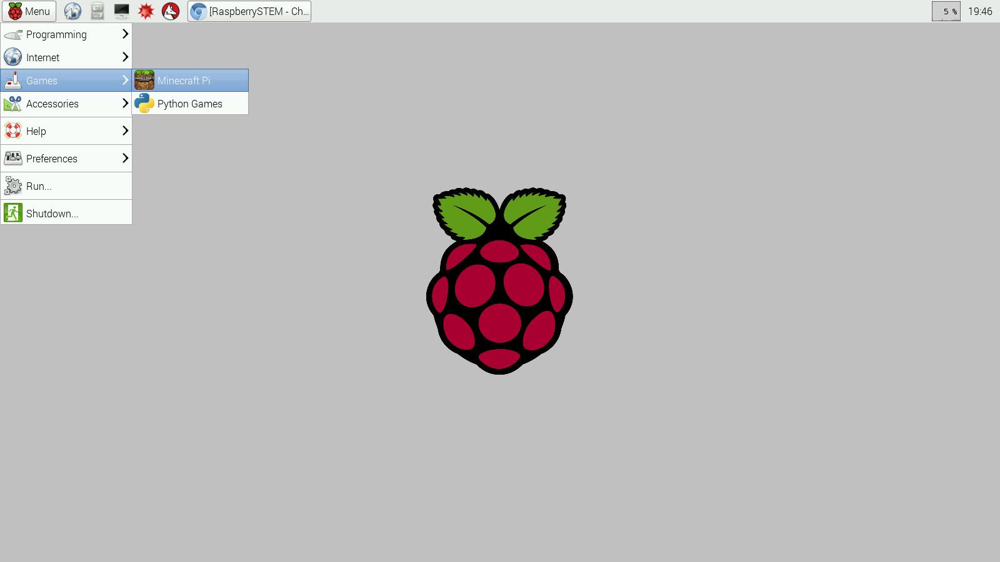
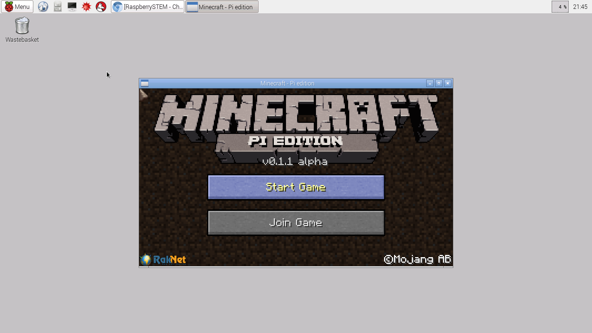
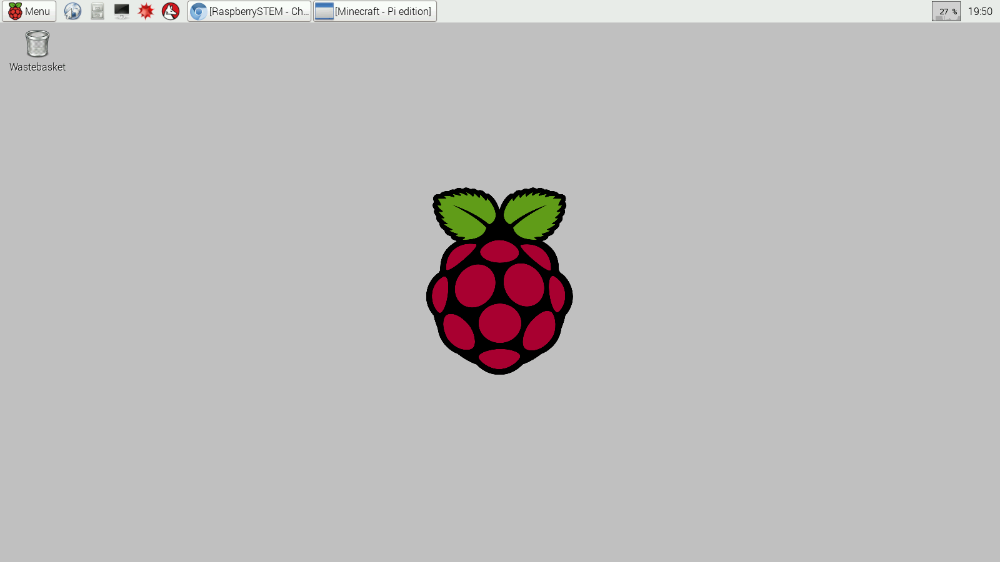

The Raspberry Pi comes preloaded with a simplified version of Minecraft tailored to the Raspberry Pi. It runs in creative mode only and has a custom API for editing the world. Both single and multiplayer are supported. With the API you can create programs that interact with both your electronics AND the minecraft world.
To get started, you'll need to first go to the Raspberry Pi Desktop by typing CTRL-ALT-D:
Then, you'll open Minecraft from the menu:
To begin using Minecraft, first click the "Start Game" button:
Then create a new world:

And you're now playing Minecraft! The keyboard and mouse will control your player, Steve.

You'll write programs that interact with Minecraft from the RDE. But before doing so, minimize the Minecraft window:
First press TAB. This will free the mouse up so that it can be used to control the mouse cursor.
Second, click the minimize button in the upper right corner of the window.
Minimizing the Minecraft window is important, because Minecraft Pi has a quirk that it always appears to be the top-most window on the screen (unless you minimize it). With the Minecraft window minimized, reopen the RDE by clicking on the
None required.
Now, you can write you first Minecraft program - this one is a sort-of "hello, world" for Minecraft.
How it works:
control.show(): this will be used in every Minecraft you write. It opens up the Minecraft window. When the program completes, the Minecraft window will be automatically hidden
mc = ...: this will be used at the start of many programs - it intializes a connection to the minecraft server to allows you to interact with the minecraft world (to add or destroy blocks, for example)
...postToChat...: this write hello world on the screen
...sleep...: This is our game loop. Right now, in this simple example, we’re not doing anything, but in most of our projects, this will be where the magic happens.
When minecraft runs, you’ll have to click in the Minecraft window to use the mouse. You can then move around the Minecraft world as long as you want. When you’re done, hit TAB (to free up the mouse) and then click stop STOP in the RDE. The Minecraft window will close automatically.